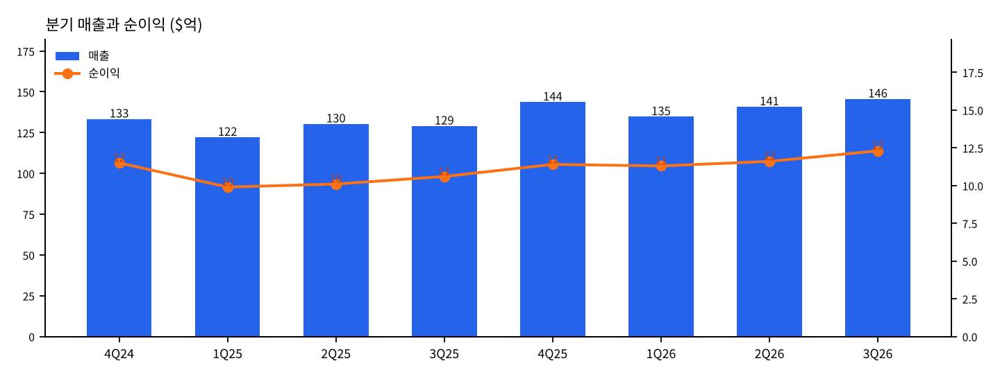
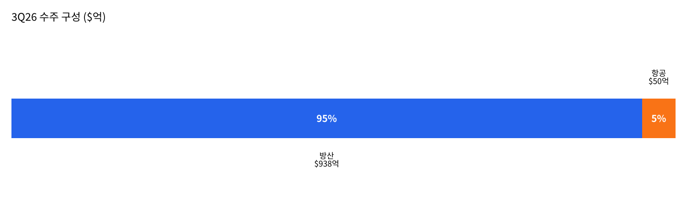
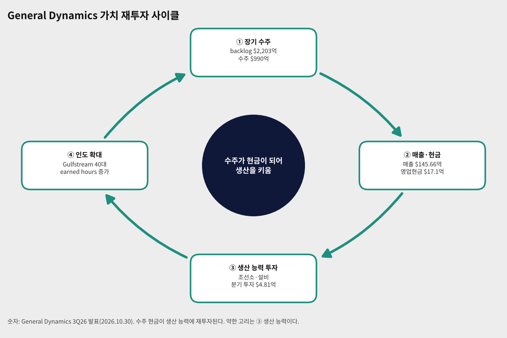

General Dynamics는 정부와 장기 계약으로 잠수함·전차를 만들고, 민간 제트(Gulfstream)와 IT 서비스를 함께 운영한다.
| 항목 | 내용 |
|---|---|
| 종목 | General Dynamics (GD) · NYSE · 방산·항공 · 버지니아 레스턴 |
| 최근 분기(3Q26) | 매출 $145.66억, EPS $4.49 |
| 핵심 사업 | Marine Systems, Aerospace(Gulfstream), Combat Systems, Technologies |
| 직원 수 | 약 117,000명(트레이딩뷰) |
| 멀티플 | PER·PEG·P/S는 08~10 항목 표 참조 |
| 직책 | 인물 | 역할·특징 |
|---|---|---|
| 회장·CEO(퇴임 예정) | 페비 노바코빅(Phebe Novakovic) | 2013년부터 CEO, 2027.1.1 executive chairman |
| 차기 CEO | 대니 딥(Danny Deep) | 현 사장, 2027.1.1 취임 |
경영 스타일: 수주 중심 운영. 장기 계약과 현금 창출을 우선하고 조선소 생산 능력 확충에 투자한다.
조선소의 earned hours가 공급망·인력 병목 완화로 크게 늘었다고 CEO가 설명했다.
$2,203억 backlog를 소화하기 위해 조선소·설비에 투자한다.
다음 실적발표는 세 가지 질문에 답하는 자리다.
1. backlog가 매출로 전환되나?
2. CEO 교체 후 전략이 유지되나?
3. Gulfstream 수요가 이어지나?
한 줄 판정 규칙: 첫 질문(backlog 전환)이 빨라지면 약한 고리인 ③ 생산 능력이 확인된다고 본다.
일정: 4Q26 실적 발표는 2027.01.27 예정(트레이딩뷰). 2027 가이던스와 새 CEO 체제의 첫 발표가 나온다.
| 분기 | 매출 | 순이익 | EPS | 조정 EPS | 특이 사항 |
|---|---|---|---|---|---|
| 4Q24 | $133.4억 | $11.5억 | 4.15 | 4.15 | |
| 1Q25 | $122.2억 | $9.9억 | 3.66 | 3.66 | |
| 2Q25 | $130.4억 | $10.1억 | 3.74 | 3.74 | |
| 3Q25 | $129.1억 | $10.6억 | 3.88 | 3.88 | |
| 4Q25 | $143.8억 | $11.4억 | 4.17 | 4.17 | |
| 1Q26 | $134.8억 | $11.3억 | 4.10 | 4.10 | |
| 2Q26 | $140.9억 | $11.6억 | 4.24 | 4.24 | |
| 3Q26 | $145.7억 | $12.3억 | 4.49 | 4.49 | 수주 $990억, backlog $2,203억 사상 최고 |
매출은 트레이딩뷰 스캐너의 분기 총매출이라 회사가 발표한 순매출과 다를 수 있다. 매출·순이익·EPS(GAAP 희석)는 트레이딩뷰 스캐너, 조정 EPS는 트레이딩뷰 실적 페이지의 Reported 값이다. 분기 정렬은 오래된 분기→최신이다.

흐름 요약: 최근 분기 매출은 $145.7억로 전년 동기 $129.1억 대비 +12.9%, 순이익은 $12.3억(전년 $10.6억)다. 최근 4분기 GAAP EPS는 $17.00, 조정 EPS는 $17.00다.
| 항목 | 내용 | 3Q26 수주 | 비고 |
|---|---|---|---|
| 방산 수주 | Marine·Combat·Technologies | $938억 | Columbia급 5척·Virginia급 9척 |
| 항공 수주 | Gulfstream | $50억 | 수주 대비 매출 1.5배 |

수주 대부분이 잠수함 대형 계약이라 한 분기 수주가 크게 흔들린다.
General Dynamics는 국가 안보를 위한 무기 체계와 비즈니스 항공기를 만드는 것을 목표로 한다.
| 축 | 내용 |
|---|---|
| backlog | $2,203억 |
| 현금 | 영업현금 순이익의 139% |
| CEO | 딥으로 교체 |

| 이동평균 | 값 | 종가 대비 | 위치 |
|---|---|---|---|
| 5일선 | $355.24 | -1.9% | 종가 아래 |
| 20일선 | $360.92 | -3.5% | 종가 아래 |
| 50일선 | $348.99 | -0.2% | 종가 아래 |
| 100일선 | $363.60 | -4.2% | 종가 아래 |
| 200일선 | $355.00 | -1.9% | 종가 아래 |
52주 고가 $400.00(2026-07-29)·저가 $306.77(2026-04-28) 범위에서 종가 $348.39는 모든 이동평균선 아래이고.
| 규칙 | 기준 | 현재 값 | 신호 |
|---|---|---|---|
| 장기 추세 필터 | 종가 vs 200일선 | $348.39 < $355.00 | 매도 |
| 중장기 교차 | 50일선 vs 200일선 | $348.99 < $355.00 | 매도 |
| 단기 교차 | 20일선 vs 50일선 | $360.92 > $348.99 | 매수 |
| 돈키언 채널 | 55일 고가 $386.60 / 저가 $322.00 | 중간값 $354.30 아래 | 매도 |
| 1개월 모멘텀 | 21거래일 수익률 | +1.1% (기준 $344.71) | 매수 |
| 3개월 모멘텀 | 63거래일 수익률 | -9.3% (기준 $384.29) | 매도 |
| 6개월 모멘텀 | 126거래일 수익률 | +2.9% (기준 $338.71) | 매수 |
| 12개월 모멘텀 | 252거래일 수익률 | +2.1% (기준 $341.29) | 매수 |
| 종합 (8개 평균) | +0.00 | 중립 |
해석: 매수 신호 4개(단기 교차, 1개월 모멘텀, 6개월 모멘텀, 12개월 모멘텀), 매도 신호 4개(장기 추세 필터, 중장기 교차, 돈키언 채널, 3개월 모멘텀). CTA 점수 +0.00(중립). 14일 ATR $8.50 (2.4%), 52주 고가 $400.00 · 저가 $306.77.
| 가격 | 기준 | 무엇이 바뀌나 |
|---|---|---|
| $386.60 | 55일 고가 | 돌파 시 채널 상단 갱신 |
| $384.29 | 3개월 모멘텀 기준가 | 종가가 이 가격 위면 3개월 신호 매수 |
| $355.00 | 200일선 | 종가가 이 선 위/아래인지로 장기 추세 신호가 바뀜 |
| $354.30 | 돈키언 중간값 | 55일 채널 중간값 위/아래로 신호가 바뀜 |
| $344.71 | 1개월 모멘텀 기준가 | 종가가 이 가격 위면 1개월 신호 매수 |
| $341.29 | 12개월 모멘텀 기준가 | 종가가 이 가격 위면 12개월 신호 매수 |
| $338.71 | 6개월 모멘텀 기준가 | 종가가 이 가격 위면 6개월 신호 매수 |
| $322.00 | 55일 저가 | 이탈 시 채널 하단 갱신 |
가격 수준은 신호가 바뀌는 기준선일 뿐 진입·청산 가격 제안이 아니다. 20일/50일 교차는 이동평균 자체가 움직여 단일 가격으로 표시하지 않았다. 일봉·주봉은 종가 기준 직접 계산(고저 데이터 미사용)이다.
| 악재 요인 | 내용 | 강도 |
|---|---|---|
| 조선 병목 | 공급망·인력 병목, earned hours 확대 필요 | 중간 |
| CEO 교체 | 2027.1.1 CEO 교체 | 중간 |
| 수주 변동 | 대형 계약 집중 | 참고 |
| 티커 | 회사 | PER(TTM) | PEG | P/S | EPS 성장(YoY) |
|---|---|---|---|---|---|
| GD | General Dynamics | 20.5배 | 2.01 | 1.66배 | +10% |
| LMT | Lockheed Martin | 20.4배 | 0.36 | 1.69배 | +57% |
| NOC | Northrop Grumman | 17.2배 | 1.22 | 1.77배 | +14% |
| RTX | RTX | 31.8배 | 1.22 | 2.81배 | +26% |
| LHX | L3Harris | 24.1배 | 1.58 | 2.05배 | +15% |
비교 결론: General Dynamics의 PER 20.5배는 Lockheed Martin(20.4배)과 비슷하고 Northrop Grumman보다 높으며 RTX·L3Harris보다 낮다. PEG 2.01는 네 곳 모두보다 높다.
현금·부채는 트레이딩뷰 스캐너 값이다. 부채가 현금보다 크지만 영업현금이 크다.
| 지표 | 값 | 출처 | 해석 |
|---|---|---|---|
| 현금·단기투자 | $44억 | 트레이딩뷰 스캐너(최근 분기) | |
| 총부채 | $90억 | 트레이딩뷰 스캐너(최근 분기) | |
| 순부채(부채−현금) | $46억 | 내 계산 | 현금 대비 부채 부담 |
| 잉여현금흐름(TTM) | $58억 | 트레이딩뷰 스캐너 | |
| TTM 매출 | $565억 | 트레이딩뷰 스캐너 |
| 기준 | 매출 | P/S | 비고 |
|---|---|---|---|
| 내 계산(종가 ÷ 최근 4분기 매출 합계) | $565.2억 | 1.66배 | 시총은 정렬용 데이터에서만 사용 |
| 동종(트레이딩뷰) | – | LMT 1.69배 · NOC 1.77배 · RTX 2.81배 · LHX 2.05배 | 11.19 |
해석: 영업현금이 순이익의 139%라 부채 상환과 설비 투자를 함께 감당한다(회사 발표).
EBITDA는 영업활동의 현금 창출력을 보는 지표이고, PEG는 PER을 EPS 성장률로 나눈 값이다. EBITDA·FCF는 트레이딩뷰 TTM 값이다.
| 지표 | 값 | 산출 |
|---|---|---|
| EBITDA(TTM) | $68억 | 트레이딩뷰 스캐너 |
| EBITDA 마진 | 12.0% | EBITDA ÷ TTM 매출(내 계산) |
| FCF 마진 | 10.3% | FCF ÷ TTM 매출(내 계산) |
| PER(GAAP TTM) | 20.5배 | $348.39 ÷ $17.00 |
| PER(조정 TTM) | 20.5배 | $348.39 ÷ $17.00 |
| 방식 | PER | EPS 성장률 | PEG | 판정 |
|---|---|---|---|---|
| 조정 EPS (TTM $17.00) | 20.5배 | +10% ($15.43 → $17.00) | 2.01 | 기준 초과 |
| GAAP EPS (TTM $17.00) | 20.5배 | +10% ($15.43 → $17.00) | 2.01 | 기준 초과 |
판정: 조정 EPS 기준 PEG 2.01 → 1.0 초과 PEG 기준은 1.0 이하 투자 적격, 0.5 이하 적극 매수다. EPS 성장률은 최근 4분기 EPS 합계를 직전 4분기 합계와 비교한 값(내 계산)이고, 일회성 항목이 있으면 조정 EPS 행을 함께 본다.

General Dynamics의 사이클: 수주가 현금이 되어 조선소·설비에 재투자되고, 생산이 늘면 backlog가 매출로 바뀌어 다시 현금이 되는 순환이다.
| 고리 | 현재 숫자·근거 |
|---|---|
| ① 장기 수주 | backlog $2,203억(+101%) · 분기 수주 약 $990억 |
| ② 매출·현금 | 매출 $145.66억(+12.9%) · 영업현금 $17.1억(순이익의 139%) |
| ③ 생산 능력 투자 | 분기 설비투자 $4.81억 |
| ④ 인도 확대 | Gulfstream 인도 40대 · 조선소 earned hours 증가 |
사이클의 특징: 약한 고리는 ③ 생산 능력이다(공급망·인력 병목이 있다). "(내 해석)"은 보고서 수치가 아닌 해석이다.